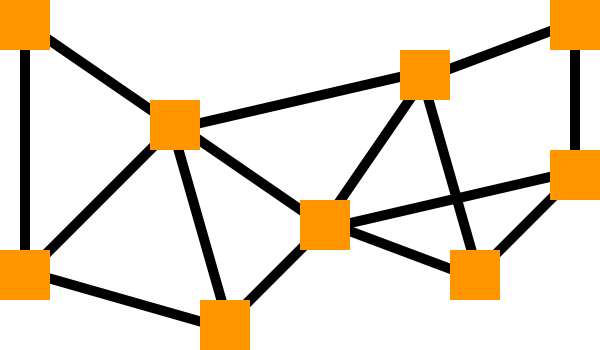
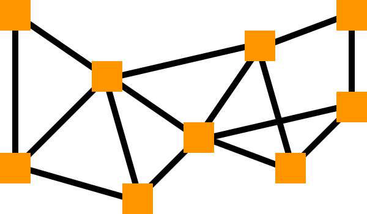

Node Master is a Game Development Plugin
originating on Roblox created by Grersh with UI and Logo Design assistance from Synthlax.
Published Feburary 5th 2025, Node Master still is maintained by Grersh to this day.
Node Master is an excellent choice for games that have custom pathfinding requirements,
and shines in games that have static maps.
Documentation for Node Master can be found
here